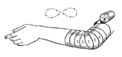

¿Que son "Vendajes"?
Un vendaje consiste en piezas de gasa o lienzo unidas entre sí y colocadas en un orden racional. El vendaje es el arte de envolver un miembro o región del cuerpo mediante vendas, gasas, lienzos o materiales similares.
Precauciones
Nunca usar una venda húmeda porque se encogerá al secarse
Usar el tamaño correcto de venda
Colocarse en el lado a vendar en una posición cómoda
Si eres diestro: venda de izquierda a derecha
Si eres zurdo: venda de derecha a izquierda
Ir de la zona con menor diámetro a la de mayor
Evitar arrugas y pliegues
Asegúrese que no esté muy apretada la venda: debe caber mínimo 1 dedo
La venda ha sido aplicada incorrectamente si presenta:
- Hinchazón
- Un aspecto color rojizo o morado
- Partes del cuerpo frías
- Molestia en la zona (aparte de la comezón común por el vendaje)
Vendaje circular
- Dar 1 o 2 vueltas al inicio y final del vendaje para sujetarlo
- Cada vuelta debe cubrir la anterior completamente
- No hacer el vendaje circular justo encima de la herida, sino a los lados
Vendaje circular
- Se usa en brazos y piernas para comprimir y proteger
- Es un vendaje con un ligero ángulo, debe ir avanzando
- Cada vuelta debe cubrir 2/3 de la venda anterior

Vendaje espiga
- Se usa principalmente en piernas, aunque también en brazos
- Es un vendaje cruzado
- Se debe cubrir 2/3 de la venda anterior
- Sirve para comprimir y favorecer que la sangre de la parte vendada circule hacia el corazón.

Vendaje en ocho
- Se usa en articulaciones, como en manos, pies, rodillas y codos
- Ofrece movilidad en la zona
- Hacer algunas vendas en espiral o circulares para sujetar
- Dar una vuelta hacia arriba sobre la articulación
- Asegurar con 1 o 2 vueltas espirales o circulares
- Dar una vuelta hacia debajo de manera cruzada
- Dar vueltas ascendentes y descendentes
- Terminar asegurando con algunas vueltas en espiral o circulares
Vendaje recurrente
- Se usa en cabeza, dedos y amputaciones
- Empezar fijando la venda con 1 o 2 vueltas circulares
- Detener con los dedos la parte donde termina la venda en estas vueltas
- Girar la venda perpendicularmente (90°) y cubrir la zona
- Detener con los dedos la venda del otro lado
- Girar, de nuevo, la venda perpendicularmente (90°), cubriendo estos dobleces
- Repetir el proceso cubriendo los huecos faltantes
- Sirve para proteger, sujetar y comprimir
¿Que vendaje en conveniente usar?
Vendaje protector blando
- Es usado para detener las gasas u otros materiales de curación y proteger la lesión.
- Se usa en torceduras, esguinces, golpes.
Vendaje comprensivo
- Es usado en brazos y piernas, para facilitar la circulación, restringir movimiento o impedir sangrado.
- Se usa en esguinces y heridas.
Vendaje Rígido
- Es usado para inmovilizar la zona.
- Se usa en fracturas.
Vendaje suspensorio
- Es usado para elevar o sujetar.
- Se usa en fracturas o esguinces.